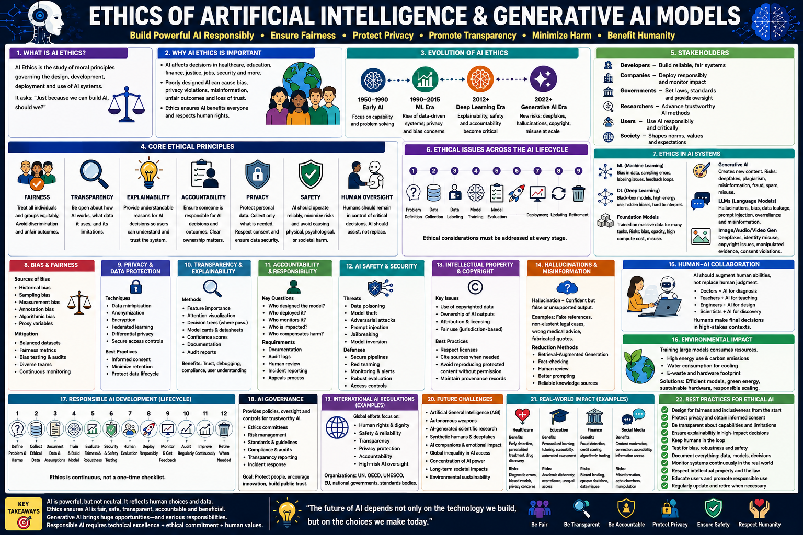

Navigate the critical ethical dimensions of generative AI — bias, privacy, deepfakes, and responsible deployment.
As generative AI systems become more powerful and pervasive, understanding their ethical implications is essential for every AI practitioner. This guide covers 10 key ethical dimensions — from bias and fairness to regulatory frameworks — with practical code examples for bias detection, architecture overviews of ethical frameworks, and a comprehensive self-assessment quiz for the CGAI exam.

Bias detectionDemographic parityAlignmentRed teamingEU AI ActResponsible AI📊 AI Ethics pillars — fairness, safety, transparency, accountability, privacy, and governance in generative AI
Generative models inherit biases from training data. These manifest as stereotypical outputs, unequal performance across demographic groups, and representational harms.
LLMs confidently generate factually incorrect content. Hallucinations pose risks in medical, legal, and journalistic applications where accuracy is critical.
Training data may contain PII, and models can memorize and regurgitate training examples. Differential privacy and data filtering are key safeguards.
GenAI models are black boxes. Model cards, explainability techniques (SHAP, LIME), and chain-of-thought prompting improve transparency.
Who is responsible when an AI system causes harm? Clear accountability chains, human-in-the-loop processes, and audit trails are essential.
Training on copyrighted data and generating content that resembles protected works raises unresolved legal questions. Fair use doctrine is being tested in courts.
Generative models enable realistic fake images, videos, and audio. Deepfakes threaten democratic processes, personal reputation, and national security.
Training large generative models consumes massive energy. GPT-3 training emitted ~552 tons CO₂. Inference at scale may exceed training emissions.
Ensuring AI systems behave according to human values. RLHF, constitutional AI, and red teaming align model outputs with safety requirements.
Governments worldwide are regulating AI. The EU AI Act classifies systems by risk tier. The US Executive Order on AI mandates safety testing and transparency.
Understanding the major ethical frameworks and standards that guide responsible generative AI development.
Each ethical dimension requires specific metrics, techniques, and governance approaches.
Risk-based regulation: unacceptable (banned), high-risk (strict requirements), limited (transparency), minimal (no regulation). Effective 2024–2026.
US framework for managing AI risks: Govern, Map, Measure, Manage. Voluntary but influential for industry standards.
Techniques to reduce bias, improve fairness, and align model behavior with ethical principles during the training process.
Remove toxic, biased, or PII-containing content from training data. LAION-5B and C4 use automated filtering pipelines to improve data quality.
Aligns model outputs with human values by training a reward model on preference data and optimizing the policy with PPO.
Continuously monitor fairness metrics across demographic groups during training. Intervene when disparities exceed thresholds.
Uses a set of principles (constitution) to guide model behavior. AI evaluates its own outputs against these principles for self-improvement.
Deployment-time safeguards that protect users and prevent harmful outputs from generative models.
Pre- and post-generation filters that detect and block toxic, unsafe, or policy-violating content. OpenAI and Google use multi-layer moderation.
Embed imperceptible signals in generated content to verify its AI origin. SynthID (Google DeepMind) and C2PA standard enable content authentication.
Systematic adversarial testing to find model vulnerabilities. Defenses include prompt hardening, output classifiers, and refusal training.
Human review for high-stakes decisions. Required by EU AI Act for high-risk systems. Provides accountability and catches edge cases.
A complete fairness evaluation pipeline using Fairlearn and HuggingFace. All key concepts annotated.
⬆️ Bias detection, fairness metrics, differential privacy, carbon tracking, and content moderation — a complete ethical AI evaluation pipeline.
| # | Ethical Dimension | Key Concern | Mitigation / Technique | Regulatory Standard |
|---|---|---|---|---|
| ① | Bias & Fairness | Stereotypical outputs, unequal performance | Demographic parity, equal opportunity | EU AI Act (high-risk) |
| ② | Hallucination | Factually incorrect generations | RAG, fact-checking, uncertainty quantification | Transparency requirements |
| ③ | Privacy | Training data memorization, PII leakage | Differential privacy, data filtering | GDPR, CCPA |
| ④ | Transparency | Black-box decisions, lack of explainability | Model cards, CoT prompting, SHAP | EU AI Act Art. 13 |
| ⑤ | Accountability | Unclear responsibility for AI harm | Audit trails, human-in-the-loop | EU AI Act (human oversight) |
| ⑥ | Intellectual Property | Copyright infringement in training/output | Training data provenance, opt-out mechanisms | Pending litigation |
| ⑦ | Deepfakes | Malicious synthetic media | C2PA provenance, watermarking, detection | EU AI Act transparency |
| ⑧ | Environmental Impact | High energy consumption of training/inference | Carbon tracking, efficient architectures | Voluntary reporting |
| ⑨ | Safety & Alignment | Harmful or misaligned outputs | RLHF, constitutional AI, red teaming | US Executive Order |
| ⑩ | Regulation | Compliance with evolving AI laws | Risk classification, conformity assessment | EU AI Act, US EO, China AI Law |
Implemented during development & training
Organizational & regulatory measures
Before deploying any generative model:
| Regulation | Scope | Key Requirement | Penalty (Max) |
|---|---|---|---|
| EU AI Act | AI systems in EU market | Risk-based classification + conformity assessment | €35M or 7% revenue |
| US Executive Order | US federal agencies + developers | Safety testing + transparency reporting | Agency enforcement |
| GDPR | Personal data in EU | Data protection + right to explanation | €20M or 4% revenue |
| China AI Law | AI systems in China | Content control + algorithm registration | Service suspension |
Test your knowledge with 25 questions covering AI ethics, bias, privacy, regulation, and responsible deployment.